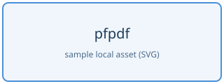

3. GFM の書き方
pfpdf の Markdown は GitHub Flavored Markdown(GFM)が基準です。GitHub で使える標準的な記法がそのまま使えます。この章の記法はすべて実際にこの PDF 上で変換されています。
3.1 見出しと段落
# から ###### までの Markdown 見出しが使えます。見出しには source 順で一意な anchor が付き、6 階層すべてが目次に載ります。同名見出しには -2、-3 の suffix が付きます。raw HTML で直接書いた h1 から h6 は自動目次の対象ではなく、link target にする場合は id を明示します。
3.2 強調
emphasis、strong emphasis、strikethrough、および妥当な入れ子(strong + emphasis)が使えます。
日本語の強調
日本語の文中でも ** はそのまま使えます。全角の句読点や括弧が隣接していても正しく変換されます。
- これは重要です。
- これは**「強調表示」**の例です。
- これは**重要な点。**続きのテキストも書けます。
- ここは**（重要事項）**です。
<strong> タグを書く必要はありません。まず ** を使ってください。
3.3 リスト
ネストしたリスト、番号付きリスト、task list が使えます。
-
果物
- りんご
- みかん
- 温州みかん
- ポンカン
-
野菜
-
完了したタスク
-
未完了のタスク
3.4 表
表は raw HTML ではなく GFM の table 記法を推奨します。列の揃えも指定できます。
| 項目 | 左揃え | 中央 | 右揃え |
|---|---|---|---|
| A | left | center | 100 |
| B | left | center | 2,000 |
3.5 リンクと画像
- inline link: Vivliostyle
- autolink: https://commonmark.org/ のように URL をそのまま書くとリンクになります
- 画像:
のように相対パスで指定します

長い URL と識別子
16 grapheme以上の URL、メールアドレス、path、snake_case・kebab-case・camelCase の識別子には、表示時の改行候補が自動で入ります。URLの / や ?、hostの .、識別子の区切りが優先されます。link先やコピーされる文字列に空白・zero-width文字は追加されません。
https://example.invalid/reports/2026/very-long-document-name?format=print&language=ja
inline codeとcode block、数式、kbd、sampの内容は完全保存を優先するため対象外です。codeの長い行はtemplateの既存の折り返し規則で表示されます。
3.6 引用とコード
これは blockquote です。 複数行にわたって書けます。
inline code は `backtick` で囲みます。code block は 05 章を参照してください。
3.7 水平線
--- または *** で水平線(thematic break)になります。
indent なしの単独行 ___ は pfpdf では改ページ(02 章参照)に予約されているため、水平線には使えません。blockquote や list の内側、前後に空白がある場合、underscore が 4 個以上ある場合は改ページ記法になりません。
3.8 GFM に含まれない GitHub の機能
GitHub.com 上の一部の表示は GFM の仕様ではなく、GitHub のサービス固有の機能です。次は pfpdf では変換されません。
@userの mention、#123の issue / pull request reference:smile:のような emoji shortcode> [!NOTE]などの alert
Mermaid は pfpdf の個別 extension として対応しています。05 章の mermaid fenced code block を参照してください。それ以外の機能が必要な場合は raw HTML(04 章)や画像で表現してください。
3.9 BibTeX 参考文献
先頭 Markdown の front matter で .bib file を指定します。相対 path は front matter を書いた Markdown の親 directory を基準にします。複数 file は list で指定できます。
---
title: 調査報告
bibliography:
- bibliography/references.bib
---本文では TeX と同じ \cite command で BibTeX key を引用します。複数 key は comma で区切ります。
先行研究\cite{smith2024}と比較研究\cite{smith2024,tanaka2025}を参照します。引用は [1] のような番号になり、PDF 内の参考文献 entry への link が付きます。参考文献一覧を置く場所には、top-level の独立行として \printbibliography を書きます。通常の Markdown 見出しを直前に書けば目次にも載ります。
# 参考文献
\printbibliography\printbibliography を省略した場合は、一覧を文書末尾へ追加します。inline code、code block、raw HTML、数式内の \cite は文献引用として解釈しません。literal な使用例は `\cite{key}` のように inline code で書けます。引用の \cite を backslash でも escape する場合は \\cite{key} と書きます。
初期版は BibTeX / BibLaTeX の .bib と数値 style を扱います。存在しない key、重複 key、不正な BibTeX、読めない file は PDF を部分生成せず code 2 で失敗します。TeX の \ref は文献引用ではなく、将来の図表・数式・節参照用に予約しています。